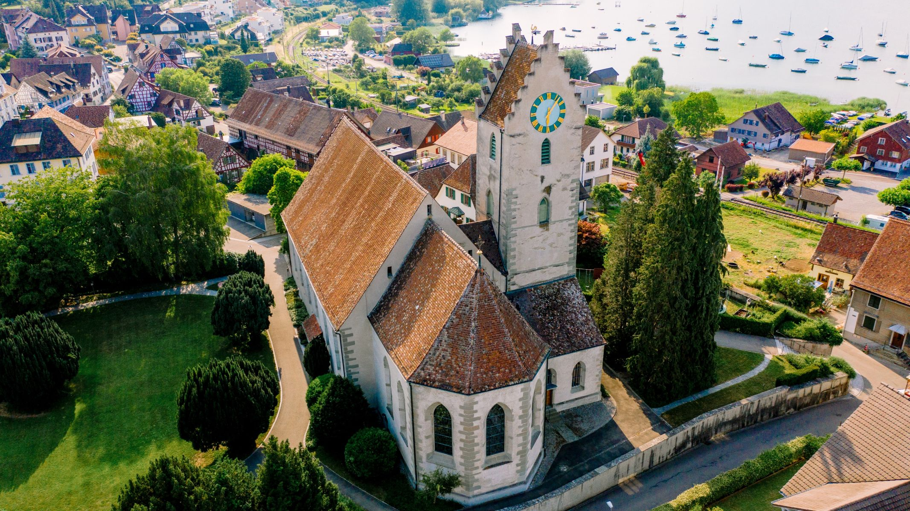

어촌이자 농촌, 포도를 재배하던 마을인 에르마팅겐은 콘스탄스 호수 하류의 삼각주에 위치해 있다.
크로이츠링엔(Kreuzlingen)과 슈테크본(Steckborn) 사이의 이 마을은 투어가우(Thurgau) 주에서 기록으로 남아있으며 현존하는 가장 오래된 마을이다.
에르마팅겐은 원래 슈타트(Stad)와 아우서도르프(Ausserdorf), 두 지역으로 나뉘어 있었다. 슈타트는 호숫가에 밀집한 옛 어촌 마을이다. 이 지역의 전면은 저 멀리서 봤을 때 강한 인상을 남기는데, 지역색이 뚜렷하게 드러나는 획일적인 모습이다. 반면 아우서도르프는 완만한 언덕에 있으며, 17~19세기 지어진 목조 주택과 장중한 집이 빽빽하게 들어서 있다. 과거 이렇게 나뉘었던 경계가 현재는 크로이츠링엔-에츠빌렌(Kreuzlingen-Etzwilen) 철로와 공장 부지에서만 그 흔적이 남아 있다.
호숫가에 자리 잡은 탁월한 지리적 이점뿐 아니라 웅장한 저택과 공원 역시 에르마팅겐의 매력 포인트다. 빌라 릴리엔베르크(Villa Lilienberg)와 그 주변을 둘러싼 공원, 울프스베르크(Wolfsberg) 성의 본거지인 울름베르크(Ulmberg) 영지 등이 대표적이다. 오늘날 울름베르크 영지는 트레이닝 센터로 활용하고 있으며, 빌라 릴리엔베르크에서는 기업 포럼을 개최한다. 이 덕분에 에르마팅겐이 컨퍼런스 및 트레이닝 장소로 이름을 알리고 있다.